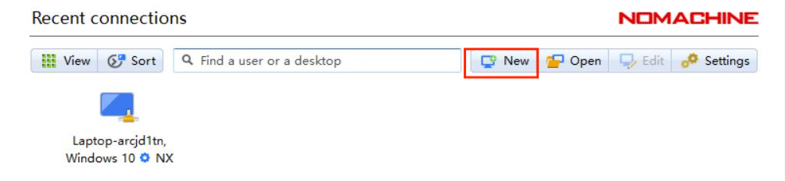
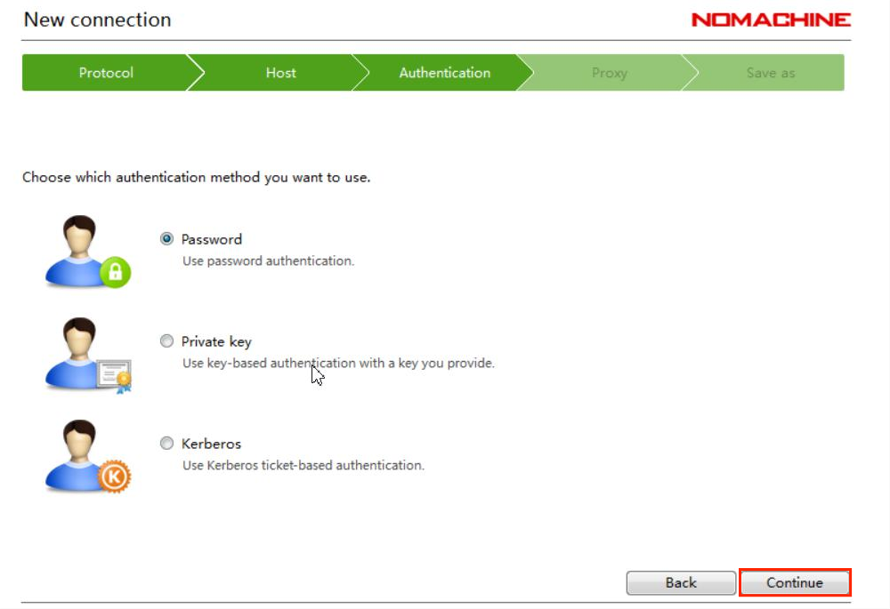
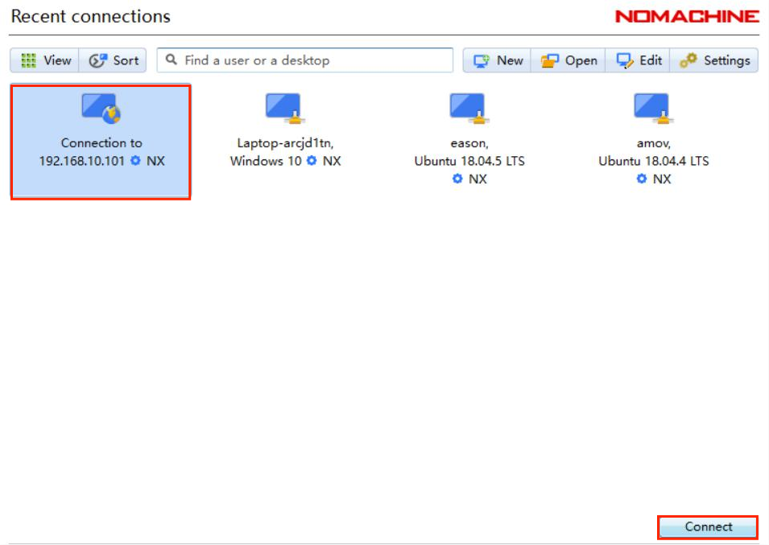

首次飞行¶
本节主要讲解T265相机配置下无人机的首次飞行。
电脑软件准备工作¶
准备一台笔记本电脑，电脑系统不做要求，可以是Windows7，Windows10或者是Ubuntu系统。需要安装QGroundControl(以下简称QGC)和nomachine。 QGC的作用是连接到飞机，监控飞机本身的状态（传感器是否正常，参数配置是否正常）；nomachine用作远程连接到板载计算机。

从图中可以看到，有不同操作系统下的安装包，根据自己笔记本电脑系统安装相应的QGC和nomachine。


{kind=link}
{kind=link}
qgc远程连接到飞机¶
首先连接到飞机的数传wifi，命名为amov-uav#####,“#####”代表出厂序列号。
{kind=link}
密码为12345678
电脑连上飞机的数传wifi后，打开QGC地面站，在通讯连接下面选择“添加”

类型选择“ TCP”，主机地址为“192.168.10.###”，“###”为wifi名字的后三位数字。端口号为“6000”。
{kind=link}
然后点击“连接”，连接成功后如下图所示

注意
如果做无人机室内测试，需要在地面站修改参数EKF2_AID_MASK，EKF2_HGT_MODE，详细操作如下：
首先点击参数（Parameters）按钮，进入参数修改界面，如下。
在search栏输入aid，选择EKF2_AID_MASK参数
在窗口右上侧会弹出子页面,如下图所示。

一般默认选择第一项use GPS,由于我们室内飞行使用的是T265作为位置定位源，所以需将此参数改为4、5项，修改后保存。
在search栏输入hgt,选择EKF2_HGT_MODE参数栏
在窗口右上弹出的子页面上，点击下拉菜单，选择vision，如下图所示
最后保存退出。
nomachine远程连接¶
{kind=link}
查看板载计算机ip¶
查看板载计算机ip有两种方法，第一种方法是点击右上角“wifi信号”，选择“Connection Information”， 在IPv4-IP Address下，用“红框”标记的就是板载计算机的ip地址。


第二种方法是点击右键，选择“Open Terminal”,输入“ifconfig”,在最下面wlan0下用“红框”标记的就是板载计算机的ip地址。


nomachine远程连接板载计算机¶
点击New
{kind=link}
在Protocol下选择NX，点击Continue。

在“Host”下填写板载计算机的ip地址，板载计算机地址参考步骤2，“Port”下默认4000。

在Authentication下默认是Password，点击“Continue”。
{kind=link}
在Proxy下默认是“Don’t use a proxy”，点击“Continue”。

在Save as下会生成默认的name，可以不做更改，点击“Done”。

按照上述步骤操作，会自动生成如下图所示用红框标起的链接，点击“Connect”。
{kind=link}
在“Username”和“Password”下输入“amov”

Nomachine成功连接板载计算机后会显示如下界面

此时可同时连接qgc与板载计算机，方便后续实验操作。

启动脚本¶
首先在终端输入“rs-sensor-control”,查看有没有传感器连接，正常情况下如 下图所示，会显示传感器的序列号。
{kind=link}
启动脚本在下图所示的目录下面
在终端输入如下命令，启动脚本
启动脚本后如下图所示
检查各项数据是否正常¶
在启动脚本后，首先查看地面站，地面站上会显示飞机的航向为正东，就是“E”。
{kind=link}
第一个终端正常情况下如下图所示，各项数据均正常
第二个终端如下图所示，查看飞机的位置、速度、角度与角速度信息是否正常,移动飞机,查看飞机的位置信息是否正常，飞机向前为X轴正方向，向左为Y轴正方 向，向上为Z轴正方向。下图例子为将飞机向后向上各移动大概1m，数据显示正常。
第三个终端如下图所示，显示“Program is running”即表示脚本正常运行。
{kind=link}
{kind=link}